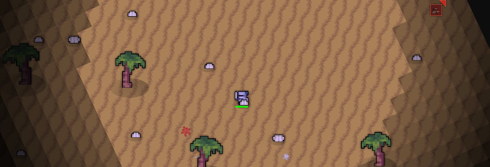
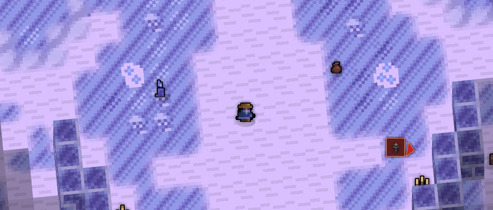
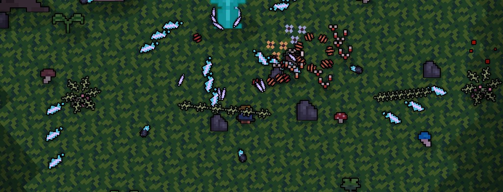

Cosmic is an spin-off private server of Realm of the Mad God. To get started, you can visit the official discord server, found in the Join section of the wiki, to find
information on how to get the game.
The game features a plethora of new features not offered in Realm of the Mad God. Some features include: revisioned item system, revisioned character maxing, resivisioned
dungeon system, Revisioned party system, completely new encounters all through-out, and many more.

Objectives
Cosmic offers similar gameplay loop as Realm of the Mad God, you dwelve into a planet, clear enemies, and fight the final boss. However,
the developers have future plans to changing this gameplay loop into something completely unique.
How to play
To get started on cosmic, first, head to the Join section and locate the Discord server.
Next, download the standalone client located on the #information section of the discord. Afterwards, create your account.
Then, select a character that suits your style and preferences. Finally, embark on an adventure to explore the diverse planet!

Characters
The game current offers a selection of six different classes:
Sharpshooter: The Sharpshooter is a physical-dps class, excelling in medium-range combat with a focus on high damage output.
Ideal for players who enjoy dealing significant damage from a distance.
Stormcaster: The Stormcaster is a magic-damage class, masterful at medium-range combat.
This class is ideal for players who enjoy controlling the battlefield with potent AoE spells.
Cleric: The Cleric is a magic-support class, excelling in providing vital aid to allies during combat.
This class focuses on sustaining their team through healing and buffs rather than direct combat.
Sentinel: The Sentinel is a steadfast physical-support class, excelling in protective frontline engagements.
Ideal for players who revel in a defensive playstyle, this class shines in its ability to shield allies and control the flow of battle.
Vanguard: The Vanguard is a vigorous physical-dps class, excelling in close-range, aggressive melee combat.
Perfect for players who enjoy leading the charge and dealing substantial damage.
Shadowblade: The Shadowblade is a swift and agile physical-dps class, specializing in quick, evasive combat tactics.
This class is ideal for players who prefer a hit-and-run playstyle, using speed and stealth to outmaneuver opponents with precision.

Items, Leveling, Encounters
Items: Items can be found through defeating enemies or crafting them through the forge. Every item that possesses a rarity has a chance to roll
unique abilities and modifiers through the ItemData feature.
Leveling: The primary way to gain levels is to defeat enemies. The stronger the enemy, the more experience points you earn from them.
The goal of every character is to reach the maximum level of 60.
Encounters: The planets are the primary way to start your adventure and fight powerful foes. Another alternative are dungeons. Dungeons can be
encountered when killing enemies in realm or through unique events.